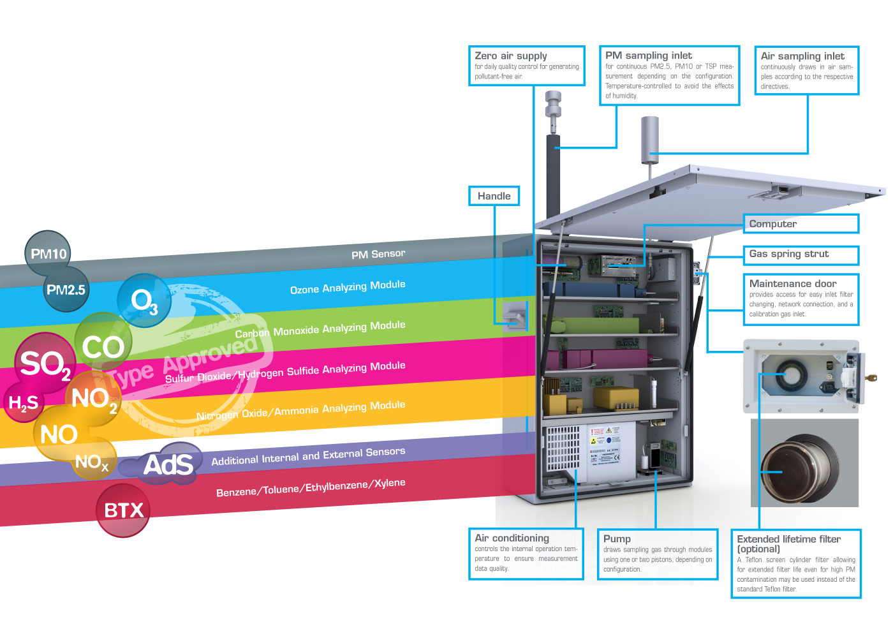
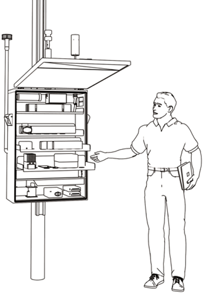
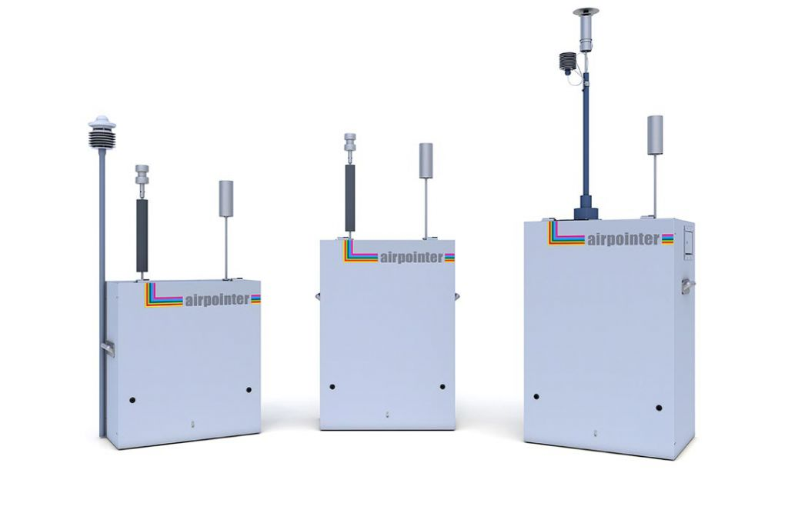

airpointer®
Number 1 compact air quality monitoring system
Air Pointer was established in 1980 and is headquartered in Vienna-Austria and Postdam, Germany, who are the manufacturers of Air Quality Monitoring Systems and provide products and services for AQMS with Data acquisition. Their AQMS can be used Mobile monitoring stations also. They provide Compact air quality monitoring system Internal Data System with Web-Browser access and comprehensive SW package Measurement modules: NO, NO2, SO2, O3, CO, PM10, PM2.5 (according to the international standards) Additional gas sensors such as BTX, H2S, NH3, NMHC and other compounds to be added on request

- Ambient air quality with regard to health-harming substances also has to be considered on a small scale, because local microclimatic conditions may create an air quality considerably differing from a large-scale approach. Health hazards caused by a momentary pollutant concentration increase indicate the necessity of point of interest monitoring.
- The airpointer is the ideal tool for monitoring combustion process gases and volatile emissions.
- Because of its high flexibility, the airpointer is the ideal tool for monitoring CO, O3, H2S, SO2, NO/NO2/NOX and PM. The traffic data sensor is one of many add-on sensors, which may be added quickly and simply. It enables measuring the number of vehicles and their average speed. Resulting data may be recorded and clearly displayed, for example in combination with nitrogen oxide and PM data.


- The airpointer® is the world’s first integrated, certified and type approved according to European Norms and the regulations of the US Environmental Protection Agency, compact air quality monitoring system.
- A turn-key product that can be quickly and easily installed with 50% lower total cost of ownership than conventional metering stations.
- A modular system equipped with gas analysers from Thermo Fisher and/or Teledyne API, also allowing customised add-ons (e.g. vehicle counters, noise sensors, wind sensors).
- There are over 500 airpointer® units installed globally.
- Due to its small size and weight, the airpointer® can be installed in a wide variety of indoor and outdoor applications including among others public places, industrial sites, traffic sites, and meteorology, as well as in diverse environmental conditions.
They provide customisable AQMS products. 2D unit –2 gas modules + meteorology + AdS 4D unit -4 gas modules + meteorology + AdS HC unit (high capacity) –ALWAYS needed if: Type approved PM (MetOne, Grimm, Palas, Teledyne API..) Temperature > 45°C


City Center
Public Parks